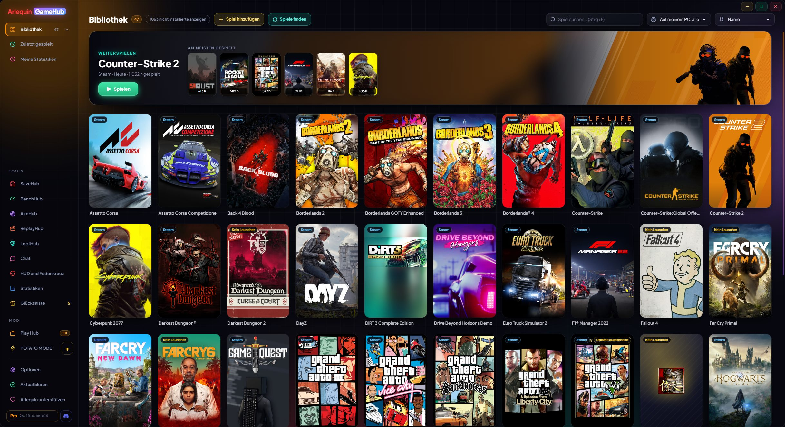

Deine ganze Bibliothek an einem Ort
Steam, Epic, GOG, Xbox, Ubisoft, EA, Battle.net, Amazon, Rockstar und Spiele ohne Launcher, zusammen.
GameHub schaut, was schon auf deinem PC ist: die Ordner und Dateien, die der Launcher jedes Stores anlegt. So findet es deine installierten Spiele und auch die, die du besitzt, aber nicht installiert hast, mit Covern und deinen Spielstunden. Die Stunden zählen auch, wenn du das Spiel über seinen eigenen Launcher startest.
In der Seitenleiste öffnet ein Klick auf Bibliothek deine Stores mit der Anzahl deiner Spiele in jedem (auch die, deren App installiert ist, selbst wenn noch keine Spiele da sind). Du kannst nach Name, zuletzt gespielt, Stunden oder Größe sortieren, sofort suchen und sehen, was du zuletzt gespielt hast.
Spiele ohne Launcher (ein Emulator, ein itch.io-Spiel…) fügst du mit „Spiel hinzufügen“ hinzu, oder du sagst GameHub, in welchen Ordnern deine losen Spiele liegen, und es findet sie selbst. Es sucht das offizielle Steam-Cover auch für Spiele aus anderen Stores, von Hand hinzugefügte oder aus dem Store entfernte; gibt es keins, nimmt es das Symbol des Spiels, und du kannst immer dein eigenes Bild setzen.
Ein Spiel, das du in mehreren Stores oder im selben Ordner hast, erscheint nur einmal. Und wenn Steam ein Spiel aktualisiert, siehst du es auf seiner Karte („Aktualisiert 45 %“ oder „Update ausstehend“).
In der Beta zeigen Steam-Updates und Epic-Downloads (Installieren oder Aktualisieren) unten auf der Karte, wo sonst „Spielen“ steht, den echten Fortschritt in %, die Geschwindigkeit und die Restzeit; ein Klick öffnet Steam bzw. Epic. Bleibt ein Download stehen, steht dort „Pausiert“.
In der Beta neue Stores: Riot (League of Legends, VALORANT, TFT…), HoYoPlay (Genshin, Star Rail, Zenless…), Wargaming (World of Tanks…), Ankama (Dofus, Wakfu…) und Gameforge (Metin2, NosTale…), mit den Stunden jedes Dofus-Charakters. Konsolenspiele aus GOG Galaxy (PlayStation, Nintendo) haben ihren eigenen Bereich und lassen sich ausblenden, und unter Optionen → Bibliothek entfernst du Stores, die du nicht willst, und wählst ihre Reihenfolge in der Seitenleiste.
Wenn sich etwas einschleicht, das kein Spiel ist (ein Programm, ein Server…), entfernst du es und GameHub lernt daraus. Zurückholen kannst du es unter Optionen → Bibliothek.
Es fragt nie nach dem Passwort eines Stores: Zum Spielen startet es jedes Spiel mit seinem eigenen Launcher, als hättest du es selbst geöffnet.
Deine Xbox-/Microsoft-Store- und Ubisoft-Spiele erscheinen auch, wenn sie nicht installiert sind, und Game-Pass-Spiele lassen sich ausblenden. Reihen werden nach Erscheinungsdatum sortiert, und Cover und Hintergründe werden auf deinem PC gespeichert: Sie erscheinen sofort, auch offline.
So geht’s
- Öffne es und warte ein paar Sekunden: Deine Spiele erscheinen von selbst.
- Doppelklick oder die Schaltfläche „Spielen“ (unter dem Cover), um ein Spiel zu starten.
- „N nicht installierte anzeigen“ zeigt auch die, die du nicht installiert hast.
- „Spiele finden“ durchsucht deine Stores sofort neu.

Probierst du es aus?
⬇ Direkter Download 🛍️ Im Microsoft Store herunterladenWindows 10 und 11 (64 Bit) · Kostenlos · Aktualisiert sich selbst